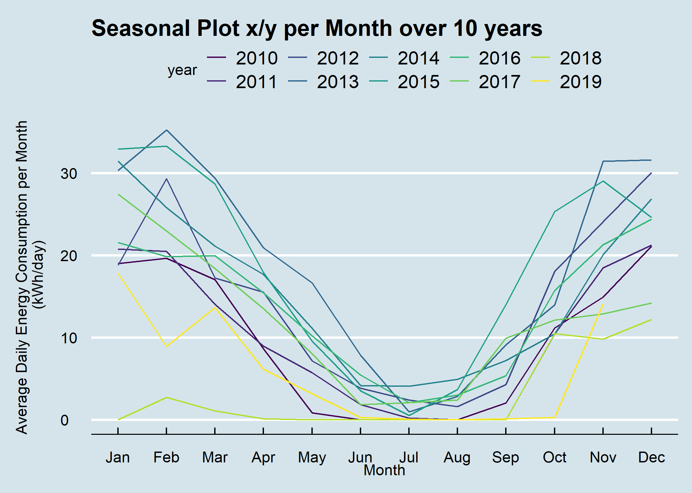
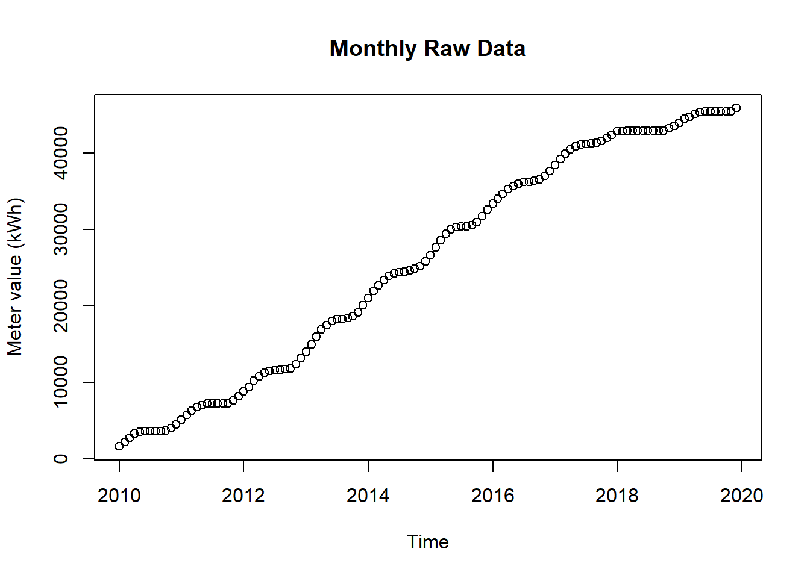

8.1 Overlapping
8.1.1 Goal
Plot a seasonal plot as described in Hyndman and Athanasopoulos (2014, chapter 2.4):

Figure 8.2: Seasonal Plot Overlapping per Month over 10 Years
8.1.2 Data Basis

Figure 8.3: Raw Data for Seasonal Plot Overlapping
8.1.3 Solution
Create a new script, copy/paste the following code and run it:
library(forecast)
library(dplyr)
library(plotly)
library(htmlwidgets)
library(ggthemes)
library(viridis)
library(lubridate)
# load csv file
df <- read.csv2("https://github.com/hslu-ige-laes/edar/raw/master/sampleData/flatHeatAndHotWater.csv",
stringsAsFactors=FALSE)
# filter flat
df <- df %>% select(timestamp, Adr02_energyHeat)
colnames(df) <- c("timestamp", "meterValue")
# calculate consumption value per month
# pay attention, the value of 2010-02-01 00:00:00 represents the meter reading on february first,
# so the consumption for february first is value(march) - value(february)!
df <- df %>% mutate(value = lead(meterValue) - meterValue)
# remove counter value column
df <- df %>% select(-meterValue)
# value correction (outlier because of commissioning)
df[1,2] <- 600
# create time series object for ggseanplot function
df.ts <- ts(df %>% select(value) %>% na.omit(), frequency = 12, start = min(year(df$timestamp)))
# create x/y plot
numYears = length(unique(year(df$timestamp))) # used for colours
plot <- ggseasonplot(df.ts,
col = viridis(numYears),
main = "Seasonal Plot x/y per Month over 10 years",
ylab = "Energy Consumption (kWh/month)"
)
# show static plot (uncomment it if you want a static plot)
#plot
# change theme (optional)
plot <- plot + ggthemes::theme_economist()
# make plot interactive (optional)
plotly <- plotly::ggplotly(plot)
# show plot interactive plot (optional)
plotly8.1.4 Discussion
A seasonal plot allows the underlying seasonal pattern to be seen more clearly, and is especially useful in identifying years in which the pattern changes.
Hints:
- Double click on a specific year in the legend to display only that year
- Click once to activate/deactivate an element